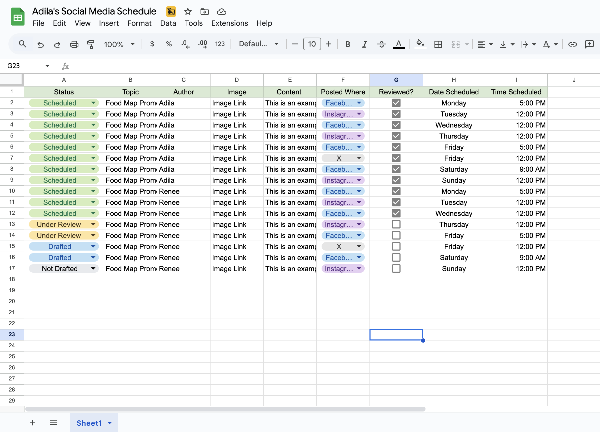

7 Sharing Your Prototype

Objectives
In this module, you will…
Determine when you are ready for dissemination
Plan and prepare for your launch
Understand how to carry out project promotions
Learn how to prepare for social media harassment
By now, if you have been creating your project prototype along with this toolkit, you have gone through a few rounds of Iteration & Evaluation, you’ve met with stakeholders and your users, and have come up with a prototype of your application. Now comes the hard part: disseminating your data application/visualization!
Developing your application is only the first step in the process of creating something for your audience to use. Once it’s complete, your users will not wake up the morning of your publishing day with the knowledge that your application exists. So, you have to go to them! This module will help you in determining when you are ready for dissemination, how to develop a plan for your launch and what to set-up in advance, and how to carry out a launch. Additionally, this module details important steps to take should you decide to promote your application on social media to ensure that you and your team remain safe online.
You are almost past the finish line in the creation of your application. After months of hard work, let’s not let your project fade into obscurity. It’s time to bring your project into the limelight!
7.1 Determining When to Disseminate
By this point, you have at least completed one cycle of the iteration process in developing your application. If you need a refresher on the Iteration and Evaluation process, please go back and review Module 2 for more details. At this point you should have a prototype of your application, or at least your first draft of how the project will look like. The next step is to evaluate your project and improve upon its first draft.
This first step is critical in determining whether your project is ready for dissemination, and we highly advise against skipping this step and moving right into dissemination. The project may look complete to you, but you may also be blind to any potential flaws of your project that might result in your users not engaging with your project. It may sound a bit extreme, but a dissemination can make or break your project. So be sure to be careful in this step.
Evaluation
As you enter the evaluation phase, make sure to call upon your team and your stakeholders (for review, see Module 2). Identify who should be the first to view each iteration, or version, of your project and when their feedback might be most valuable. Consider the strengths and weaknesses of each group you’d like to evaluate the project, and use these to guide who sees the project and when.
When you are ready to evaluate your project, consider the following three questions:
Does the web application do what I set out for it to do?
Assess whether your application fulfills your project goals. Take a moment to review and evaluate its performance, noting any shortcomings and potential areas for improvement.
This is the foundation of your project. Looking back on your plan, and your project goals, does your application do what you set out to accomplish? How well does your project meet or exceed your goal? If you want to answer this question yourself first, give yourself some time away from your project and return to it at a later time with fresh eyes. If your project falls short of your goals and expectations, note down why and where. What else do you need to accomplish before it meets these goals?
If you believe it to meet your goals, share your project with your team and your stakeholders. Do other people agree with you that your project meets all the goals you set for it? If they don’t, what do they feel is needed? Be open to constructive feedback.
Are there any issues with the web application?
Recognize that refinement is an ongoing process. Identify and address any major bugs that hinder the functionality of your web application. Seek feedback from your team and stakeholders to ensure comprehensive evaluation. Stick to your project goals so you don’t stay in this stage for longer than necessary seeking perfection.
This step is an ongoing process, and you will likely never be 100% complete with this part of the evaluation process. The web application can always be improved and redesigned to better accomplish what we set out to do. If you aren’t careful, one can be stuck on this step for some time seeking perfection. Therefore, it is best if you stick to your goal and set that as your limit.
By issues, we mean are there any bugs, or errors, when using or viewing your data application? Are there any major inconsistencies, or design errors that should be improved upon before dissemination?
This evaluation can be done in multiple ways. The first is to look for any major bugs within the application that limits its ability to function correctly. You have developed the project on your own, so you may not be able to see this with your own eyes, as you may have blind spots when it comes to bugs. So, this step is better to have multiple eyes on. Ask other members of your team—especially those who were not involved in the development process— to look through the application and report any major bugs they find. Use your stakeholders! Invite them to test out the beginnings of a project they’ve probably been waiting ages for. Have them report any bugs they find.
After you have combed through the project, take your list of bugs and iterate the project again with the intent to fix them. From here all major bugs should be dealt with, and you’ll be left with only minor fixes.
For minor fixes, dealing with them can depend on the project. You might not need to hammer out every last imperfection in the beginning (more on this when we go over a Hard vs. Soft Launch). On the other hand, you might be dealing with an extremely sensitive or complex project, and any issue with the final design (including small ones) might prevent the project from succeeding. In any case, you know your audience and your project best. If you and your stakeholders are happy with the project, then you can check this question off your list.
Can my intended audience use the web application in a way that is intuitive?
Prioritize user experience by seeking input from stakeholders and potential users. Conduct usability tests and focus groups to gather feedback on usability and identify areas for enhancement.
This is by far the most important question to ask yourself before continuing your dissemination. Do not allow yourself to move past this question, or continue with dissemination, until you have fully answered this question in the affirmative. At the end of the day, your project will ideally not just be useful for yourself, but it should be helpful to others as well. For a review on developing projects for your users, see Module 3.
To evaluate your project, consider setting up focus groups. Focus groups are a group of your target audience that you invite to test out your application. Walk them through the project, and have them provide feedback on what they would like to see changed. If you are able to, consider having them use the app, and jot down all the issues they note, and what they may suggest to improve your application.
In bringing together users for your focus group, consider pulling together potential users that have not heard of your app before. This way, the feedback they provide will be free from as much bias as possible. This might be a difficult step, as your target audience might have feedback for you that may be tough to swallow. We recommend you be as open-minded as possible, and write down everything they have to say. If you don’t like what you hear, take a break from your project for a day or two and come back to the project when you are prepared to dig into your feedback.
Those you invite to your focus groups will be those most likely to use your project, so make sure to take their comments seriously. In the end, once you tailor your project to the user’s skill level, you have maximized the utility of your application, and ensured that your project will actually be utilized by your target audience.
Tip
None of these are meant to be answered sequentially. As in, you do not need question 1 to be answered before moving on to question 2. Instead, it might be better to ask all these answers at once.
Once you have completed your evaluation process, if you still have issues to fix, things to add, and feedback to integrate, complete another round of development (i.e., iterate) and evaluate your project again. Rinse and repeat this cycle until you are satisfied with the answers you get from the three questions above. Once you have that, you are ready to begin planning your dissemination.
A word of caution
As mentioned previously, it can be easy to fall into an endless loop of evaluation and Iteration. No application can ever be perfect, there will always be things to improve and refine if you spend long enough looking for them. Stick to your goal, and adhere to your plan. Once you have a complete data application that you and your stakeholders are happy with, move on to dissemination.
7.2 Planning
By this point, you have met your project goals and are ready for launch. Except, that is not entirely true! The first step for any successful launch is preparation and planning. This has been said multiple times at this point, but dissemination is the next difficult step in the project process, and so planning your dissemination from start to finish is a crucial step in ensuring that you get the most out of your promotions.
Know Your Audience
The first step is to consider your target audience for your project. This includes anyone who will be using your project, and potentially sharing your project with others (after all, the best promotion is word of mouth). If you’ve been using a human-centered design approach in the development of your project, you should already have an idea of the makeup of your user base, and a sense of their needs and backgrounds (for review, see Module 3). Otherwise, knowing who your target audience is, how they interact with similar products to your toolkit, and what would make them avoid your project is essential to guiding the rest of your dissemination efforts.
Before you begin your launch, consider who your audience is and their background. Ask yourself:
How does my target audience interact with similar products? Are they efficient with using new complex technologies, or do they prefer easy and simple technological products?
Is my target audience an especially sensitive, or protected group? Is gaining their trust in my product something that can be done easily or will require additional work?
Will my target audience be forgiving of minor bugs and issues, or will they turn away from your product at the first sign of a complication?
Does my target audience have a lot of free time to devote themselves to learning how to use my project, or do they only have a few minutes of free time a day to pick up something new?
What times of day are my target audience most likely to see a promotion of my product, and where would they most likely see it?
The easiest way to answer these questions is to simply talk to your target audience. Here, focus groups are key in getting to know who will be using your project, how they may interact with it, and what might prevent them from engaging with the project in the future. If focus groups are not an option, consider conducting one-on-one interviews, note down what they say and listen to them. If that is not possible, consider sending out a survey to members of your target audience that they could complete in their free time. If all else fails, conduct as much research online on your target audience as possible, their demographic makeup, their overall sub-culture, and try to get these answers yourself. Once you have a sense of how your audience will interact with a new tool such as your project you can use this to guide the rest of your dissemination.
Hard Launch vs. Soft Launch
Moving forward with planning your launch, in your early stages you must decide whether or not you would like to disseminate your project following a Hard Launch or a Soft Launch timeline.
The Soft Launch
Used when either your project needs additional refinement requiring feedback from your target users, when your target users might be apprehensive to try new tools, and/or when releasing the project all at once might result in extreme dissatisfaction from your user-base.
A soft launch, otherwise known as a pre-release, is when your project is complete, but you don’t give the public complete access to the entire project. Instead, you might create private log-ins, or private links to waves of your target audience and slowly work your way toward completely releasing the project to the public.
You would use a soft launch when either your project needs additional refinement that can only be solved by your users actually utilizing the project in real time, and/or when your target audience might be sensitive to new tools and releasing the project to the public might result in your audience never returning to it should the project not meet their expectations. You can also use a soft launch when you expect that a flood of new users might result in serious delays in loading the product. In short, if you feel as though releasing your project to the public all at once might result in extreme dissatisfaction for your users, consider a soft launch.
To conduct a soft launch, you first need to outline your target audience and group them by similarity. Then, determine who should be the first to experience your project, and who should be the last to do so. Ideally, by the time you get to the last group you will have reached the point in which you can release your project to the public. In deciding who should be first, select the group that has the most time to learn about your project, and is likely to be the most willing to provide feedback on your project. Additionally, this group should also be the most forgiving of encountering errors, bugs, or using an application that needs further refinement. You can also instead order them based on how much they need your project, and how excited they are for using it to better meet the needs of your user base.
You can also use the time your project isn’t available to your full target audience to promote your project, and build up anticipation for the full-release of your application, especially if you are getting positive feedback regarding your application. This way your other users can begin getting excited about finally getting to use your application, and may also spread the word of your upcoming public-release.
The Hard Launch
Used when your project is a simple data application that does not require much time learning how to use, and/or when your project is in high demand, making your audience more forgiving of any issues/bugs they encounter.
A hard launch is when your project is complete, and you are ready for the data application to go right to the public for all of your users to access. For this launch, you can still collect user feedback, but the bulk of the work is finished. Any feedback from here on out will mainly be minor bugs that have gone unnoticed, or suggestions on how to expand on the project.
You would use a hard launch when either your project is a simple data application that does not require much, if any, time in learning how to use the application, and/or when your project is in high demand and thus your target audience will be forgiving of any bugs or issues they encounter when using the product.
Conducting a hard launch is simpler than conducting a soft launch. Here you can move your project right into the public space in which your users will access the application, and set things up to collect feedback if you desire. To create anticipation for the public-release, you may even promote your project in advance of the launch so that your users are excited for its release date.
Once you decide on which launch strategy you would like to implement, the next step is to fully plan and set-up your general dissemination strategy, and the timeline of your dissemination.
7.3 Dissemination Set-Up
You’ve now developed a general timeline for your dissemination plan depending on the type of launch strategy you plan to implement. Now, it’s time to set up your tools for dissemination. There are many ways to get your project out to your target audience, and what we discuss here will certainly not be the only options for you (just the big ones). Every project is different, so with that said: get creative!
MailChimp Campaigns
As part of the launch, one of the best ways to promote is through word of mouth! Social media promotions are great, but they are only one form of promotion. They rely solely on people finding you and your application, even if you’ve planned to promote on social media apps that will include your target audience. Email campaigns, however, allow you to directly reach out to your target audience and inform them that your application is ready for them to use!
We have found that MailChimp is an easy tool for sending email campaigns, and it allows for you to track the success of these campaigns. You can create a free account through their website, and immediately send emails to an audience of up to 1,000 individuals. They’re free account should be enough for most individuals and teams to promote their applications, but should you need, they also include payment tears to reach more people.
Here is a step-by-step process for creating a MailChimp campaign:
Build and import your contact list
The first step is to build your contact list. Your application has been in production for months now, and if you have incorporated human-centered design in your planning you should have a network of individuals who are ready to use your app! In addition to them, ask your network if they can share the emails of any other people that might be interested in your application. Finally, Google nearby community organizations and institutions whose goals align with your own! They will have a page dedicated to contacts that you can then add to your contact list.
After you have developed your contact list, import the list into the Audience section of your MailChimp, as seen below.

Create a new campaign
In the left side of the screen, you will see a button that says “Create.” Select this and it will bring you to a new draft for your email campaign
If you have completed step 1 correctly, your audience will automatically be selected as the recipients in the “To” section.
Make sure to write a subject, indicate a time to send the email, and select a from email.

Create your content
- You can develop the complete content of your email from scratch or use a template.

Caution: Address
Some state spam laws require that you include an address at the bottom of your email campaign. MailChimp will usually warn you if this is the case.
If you have to use an address, you can use the address of your institution or organization that you are affiliated with.
Review
Double Check that everything looks correct!
You can send yourself test emails, and make sure you send yourself a bunch! What might look good in the preview might look horrible when its in an email format, so double-check!

Double-check tracking
- This is the second most important part. Make sure you have set up tracking so that mailchimp tracks opens and clicks. This will tell you how many people you sent your campaign to opened your email, and how many of those clicked links to your application.

Send it & Track Analytics
Send your email! If you have an idea for the best time to send it, make sure to schedule your email to send during that time.
Afterwards, you can access a report of your email campaign in the “Campaigns” section of your MailChimp. Here you can see how successful your email was.

Being mistkaken as Spam
People can mistake your email campaigns as spam emails if you’re not careful. If you feel like a large part of your audience might mistake an email campaign done through MailChimp as spam, you might want to personally send emails to those individuals. Otherwise, the best way to avoid coming off as spam is to ensure the following:
Make sure you use clear and concise language, free from any typos or grammatical errors.
Include no broken links, or links that are two long. Use hyperlinks, or “buttons”, whenever possible.
Have someone else review your email campaign before sending. They could help improve the email and prevent coming off as spam.
Finally, you can also use your social media schedule to plan when you send out MailChimp campaigns, and other emails. In this way, your social media schedule now becomes a complete dissemination plan and timeline for when you send out promotions.
Web Analytics
One way to measure the impact of your project is with web analytics. Generally speaking, analytics services will log every visit to your webpage or application, and report this information to you, often through an interactive dashboard. This data can give you insight into questions like:
- How many people are visiting my site? What pages are they viewing?
- Where are these people located?
- What time of day are they visiting?
- Are they using a mobile device or laptop/desktop?
Getting the answers to these questions can help steer further development of your work and research. At HeRoP lab we use Plausible Analytics, though there are other options as well (you have probably heard of Google Analytics, for example). Keep in mind, if you are building an application on a hosted platform, such as ArcGIS Online, that platform may already collect some statistics for you, no need for a separate provider.
Why Plausible?
We switched from Google Analytics to Plausible for two main reasons: simplicity and privacy. Plausible has a very simple and user-friendly dashboard, which makes it very accessible and easy to use. It is also privacy-focused and does not collect personal data or personally identifiable information (PII) about visitors to your site. Google Analytics (which is really a marketing platform), collects much more information than we really need.
While the specific details may differ depending on your application and your analytics provider, adding web analytics to your site typically requires just the addition of a small code snippet to your markup. These code snippets will be run anytime someone visits your site in a browser, and will send a message back to the analytics provider with information about the user.
Here are some privacy-focused web analytics providers that we recommend:
Plausible: https://plausible.io/docs/ - 14-day free trial, $9/month
Matomo: https://matomo.org/ - 21-day free trial, $26/month
Insights: https://getinsights.io/ - Free tier available
Keep in mind, different providers may track different information, so if you want to learn something specific, make sure you pick a provider that will get you the right information
Tip
Remember: Adding web analytics tracking to your app is completely optional, and it may not be worth the extra effort and/or expense. Nevertheless, it is an important thing to consider before the launch.
7.4 Example of a Launch
Now that you have everything set up, you can begin to implement your dissemination plan. However, as every plan is different, this module will take you through an example of a launch, so that you can see for yourself how one might go through the motions, and disseminate their product.
Meet Adila
This is Adila, a community advocate in Sacramento, California:

Adila is a healthy food advocate for her community, and currently volunteers at the local community center. To help improve food equity and increase knowledge of healthy food options in the area, Adila has created a resource map of healthy food resources in and around her town. She has spent months of hard work creating her map and is finally ready to release her project to the public for members of her community to use. After a lengthy evaluation phase, she feels as though her project is ready to be disseminated to her target audience.
Her Audience
Through her job at the community center, she has direct access to her target audience and the type of users she hopes to reach with her project. Most of her users fall into at least one of the following user personas:
Parents or Caregivers seeking healthy foods for their family.
Socioeconomically disadvantaged people wishing to eat healthier to improve their well being.
College students on limited resources seeking healthy food options.
From there, she can use these user categories as guides for when and where she will promote her project.
Hard vs. Soft Launch
Adila’s primary, and largest, audience will be more mature individuals seeking better food options for themselves or their families. As a result, she is anticipating that some people might not have enough time to learn how to use an overly complicated application, and any bugs might deter her audience from interacting with her map further. However, she understands that her community is in great need of a resource map like hers, and so they might be forgiving of a few bugs so long as they don’t interfere with how the app operates. Weighing her options, Adila decides to do a round of focus group testing with some of her target audience before she releases it to the public. She decides against doing a strict soft launch, as the need for her resource map is great and she would like to make her application public as soon as possible.
So, Adila plans to do one or two rounds of focus group testing. During this time, she will share via social media and a MailChimp Campaign, sneak peaks and progress of her resource map to drum up anticipation. Once the focus groups yield positive results, she will move forward with a public release of her application and a few months of active social media, email campaigns, and flyer promotions.
Social media promotions
Adila will be promoting online with herself and one other colleague at the community center. To begin, they develop a social media harassment plan and go over necessary steps to limit the risk of social media harassment and doxxing. Since they both work at the same location, they decide to print out their social media harassment plan and leave it in a shared filing cabinet only they have access to just in case.
Adila then identifies where her audience is most likely to see her promotions. As mentioned previously, her audience will most likely be parents or families that are concerned about their quality of food for their families. However, she also does not want to isolate the younger audience of college students and young adults who also need this information to improve their diets. She decides that the best platform for her to use will be Facebook, Instagram, and X (formerly Twitter).
Facebook will hold a majority of her target audience, and so she will make sure that her Facebook profile is her primary mode of promotion with a majority of her promotions being posted to the website. Instagram will be her secondary platform, as this will bring in the younger college students she aims to reach and will hold some of the more mature audience members that might not be on facebook. X will be her last platform she will promote on, as it holds a similar age demographic to that of her primary target audience. However, X is predominantly male leaning, and people tend to turn to the app for news and entertainment, so she feels that the site won’t reach too many of her target audience.
With all that in mind she starts with a Dissemination plan. She decides to go with the following plan:

As we can see, as Facebook is her primary mode of social media promotion, she plans to post four days a week on Monday, Wednesday, Friday and on Saturday. As most of her audience works during the day, she has set the promotions to go out either during common lunch breaks on weekdays (12:00 PM), or in the afternoon after work is completed: 5:00 PM. Saturday is the only day of the week where a majority of her audience might be waking up early to do a grocery run, or have the day to themselves, so she sets that to go out early in the morning at 9:00 AM.
For Instagram, she decides to post every Tuesday and Thursday at 12 PM. She decides to stick to the plan of posting around noon which will line up with most of her intended audience’s lunch break where they’re most likely to be on their phones.
For X, she decides to post only once a week on Friday. She has this post scheduled around noon to line up nicely with lunch breaks when most of her target audience will be on their phones, as they might not have time later in the day if they’ve made plans.
Adila has decided to follow through this dissemination plan for one month at which point she will assess which social media profile is getting the most attention, and whether she should reallocate her time spent on one or more apps.
Newsletter Campaigns
She also identifies nearby community organizations and other community centers in the area that align with the same goals she has of promoting healthy food equity in her area and adds their contacts to her email list. With this, she sets up a MailChimp Campaign.
Her community center also hosts an email newsletter they send out to a list of people who have subscribed. She decides to ask the host of the newsletter to promote her application there, and sends them a small summary of the web application and a link to use it.
Other Promotional Steps
With her social media up and running, and her newsletter promotions going, at the same time she will begin posting flyers at her community center, and letting the other volunteers know to get the word out regarding her application. After all, this resource map was created in part to help members of her community. She should make sure everyone who visits the center knows about the map!
Monitoring & Promoting through the Future
With all this planned and in motion, she has completed her launch, and now monitors visitors to her web application, and the amount of traffic on her social media profiles. Eventually, as the months go by, the number of people visiting her web app might stabilize, and so she will shift gears and begin slowing down when she promotes her social media apps. However, for now, she can rest easy knowing her project is a success!
7.5 Video Walkthrough
Here is a walkthrough of the module in video format. This presentation is provided by the author(s) of the module for your thorough understanding, so grab a cup of coffee and follow along:
Resources
For a deeper dive on topics discussed in this chapter, please check out the following. If you have a resource to add, feel free to suggest one by submitting an issue to our toolkit repository.
Social Media
Social media is a pretty efficient way to disseminate your project. After all, your target audience likely already spends a lot of their free time on social media, or they know people who do and will recommend things they come across on social media. With that said, using social media as a tool to disseminate your project is not a simple task, and can become very time consuming. In addition, social media dissemination can open you and your team to uncomfortable and even dangerous situations such as harassment, or worse. The following portion of this module will discuss how to use social media effectively as a tool for dissemination, best practices for using social media safely, and developing your own social media harassment plan.
Platforms & Demographics
There are multiple platforms to choose from—each with their own demographic makeup—when deciding which social media platforms to use for your dissemination. This is where knowing your audience becomes key, as knowing the demographic makeup of your audience, and understanding who they are will guide you in the right direction for picking which platforms to use.
By now, you may be asking yourself, “why shouldn’t I post to every social media platform?” Surely, if you cast a wide net, you are bound to reach all of your target audience on every platform. While you certainly can post to every social media platform there is available, social media posting itself is very time consuming (more on this later). So, you may not be able to effectively post to multiple platforms on a consistent basis. Additionally, depending on the demographic makeup of your audience, they may not even be on the platform you are posting on if you have chosen to post to all platforms. As a result, you end up wasting energy posting to platforms that none of your audience will end up seeing, potentially even costing your project in the long run.
Thus, you want to be sure that when you are posting on social media, that your target audience will actually use said platform. The following table lists the most common social media platforms, and their overall demographic makeup:
As you can see, different platforms have different users on the site. This table does not include every social media platform available to you, but it does cover the most common platforms used in the United States for promoting projects. Also, keep in mind that this is looking at a general level of who is on the site, but that you know your audience best. You might have a target audience that does not fit the demographics for a platform, but in speaking with your users you may end up finding that most of your audience uses that platform.
Note on Platform Demographics
Social media is an ever-evolving landscape. As such, keep in mind that the demographics displayed here are constantly changing. We will update this portion of the toolkit regularly to ensure that it remains as up-to-date as possible, but be sure to double-check with your target audience and do your own research when deciding what platforms to use. This portion of the toolkit was last updated on July 7th, 2025
Once you have determined the platforms your audience are most likely to be active on, the next step is moving into planning and setting up your social media platform for your project. However, before you begin creating a social media account for your project, the first step is to prepare for the worst.
Harassment, Doxxing & Creating a Social Media Harassment Plan
This is where we begin to go over topics that might be upsetting to more sensitive readers. If this is you, please read the next portion of this module with caution and be mindful of your health as you read through this section. This section is not meant to scare you, but let you know what can happen when you promote on social media, and how best to prepare yourself for the worst should you ever need to.
Social media can be a wonderful tool for connecting with your audience and with potential collaborators from across the globe. However, your promotions can reach the wrong audience, and so, those wishing to use social media to promote must be prepared in the event they experience social media harassment. Social media harassment is something that researchers and advocates have been experiencing at an increased rate as they begin to use social media to promote their projects. This harassment can range from minor things like name calling or overtly rude comments to doxxing and threats of harm. Before we get into how to create a plan for if this occurs, we must first go through a few definitions.
What is social media harassment?
Social Media Harassment can take multiple forms, but are usually grouped into three main forms: cyberbullying, trolling, and doxxing.
Cyberbullying is typically defined as the willful and repeated harm of someone through electronic devices. This is typically things like name-calling or using derogatory terms toward the owner of the account, foul language, and belittling. Here the person committing the harassment means to put down their victim through public humiliation, and may even urge others to harass the account owner as well. This can be a short term issue limited to a single post, or this can become a long-term problem.
Trolling can be similar to cyberbullying, but the motivations are different. Trolling is when someone is deliberately attempting to offend you or cause you some form of distress purely for their own, or others’, online entertainment. Here, the individual’s actions are mainly attention seeking.
Doxxing is a very serious form of social media harassment, and should not be taken lightly. Doxxing is when someone, or a group of people, publish your own personal information online with the intention of silencing you, or encouraging harm toward you. This can include the public posting of your account passwords, personal contact information, and/or even your home address. The goal here is to frighten the target into silencing themselves, but some may also intend to cause real-world harm to their targets.
Creating a Plan, Preventing Harassment & Steps to Take
With these definitions out of the way, the best way to deal with harassment is to be prepared. Before you create a social media account or make a post, create a plan for how to handle social media harassment if it should occur to you. If you are using social media as part of a team, meet with them and make a plan together or go through the plan you create. Additionally, make sure to completely write out the plan in a step by step format, and make sure that everyone on your team knows where they can find it should they need it. Depending on the type of harassment, emotions may be high and the target might find themselves in a crisis situation. Having a plan outlined in advance will help guide the target’s next steps so that they can focus on taking action.
Your plan should involve the following basic steps:
Assess the Threat: What form of harassment are you currently experiencing and how extreme is this case? Assessing the threat can then guide how you, or someone on your team, moves forward with the rest of your plan.
Steps to take in immediate danger: Outline actions to take should someone find themselves in immediate danger, prioritizing getting to a safe location first. Situations like this can result in high emotions and confusion if not planned ahead of time. Make sure that these steps are broken down into simple and easy to read and understand steps, that way should you, or someone on your team, ever have to use them they can go through each step quickly and efficiently. When crafting these steps, imagine only having access to this information and nothing else to save time in looking up information later.
Setting accounts to private: Once everyone is confirmed to be physically safe, immediately set your account to private to limit the spread of harassment or completely stop it in its tracks. This will prevent new people from following the account or seeing comments so you can focus on the current bad actors.
Record all evidence and details around the incident: Have someone screenshot and record all the evidence of harassment or doxxing. If you have been doxxed, save all emails, texts, voicemails, or letters you may receive. Your first instinct might be to delete everything, but the best thing to do is record and store every instance of harassment or doxxing should you need it as evidence later. Write-up a report outlining the who, what, when, and where of the entire situation, sticking to just the facts so you know exactly what happened for later reference.
State/Organization Specific Steps: Every state and organization has different laws and policies for dealing with social media harassment and doxxing. Make sure you know what those policies are, and implement them into your social media harassment plan.
Steps to take once the storm passes: If you experience an incident of social media harassment, but have completed all necessary steps in your plan, outline final steps on what to do afterward. This can include providing mental health resources, when and how to monitor accounts for further harassment, when you might delete your social media account, or when you might re-open your account to the public.
These steps are not a copy-and-paste ready to use social media harassment plan, and every person/team will be different. Use the above steps as a guide for creating your own, personalized, social media harassment plan before you begin to set up social media promotions. In writing out a plan, make sure that anyone following it can access all the information they need while going through each step of the plan. Pretend that someone viewing the plan only has access to that document and nothing else: what information (i.e., website links, phone numbers, etc.) should be added to it to make carrying out the plan take as little time as possible?
Once you’ve outlined a plan for what to do in the event the worst happens, there are a few steps you can take to prevent harassment and doxxing.
Steps to take to limit harassment & doxxing
Here are some actions you can take beforehand to ensure that your risk for harassment and doxxing is limited:
Have multiple accounts. Make sure that you keep your personal life separate from your public life. Make sure that your personal account cannot be connected to your public account, and that your personal account is set to private with preferably a profile picture that is not a photo of you to prevent bad actors from matching the two accounts.
Safeguard Passwords. Create strong and unique passwords for each social media account connected to your project and your personal accounts. Store these passwords in a secure location, or online under a password protected and secure location. This will prevent bad actors from hacking into multiple accounts and seeking personal information.
Avoid responding. If you are experiencing harassment, the best thing to do is ignore the bad actor(s), and screenshot every comment as evidence for the future. As mentioned previously, some individuals such as Trolls harass others for attention as their motivation, responding to harassment online might result in an increase in the harassment.
Review posts and profiles before going public. When creating your social media account, set the account to private as your first step once you create a username and password. Avoid adding friends or following others until you have completed your account and you have reviewed it to be sure that no personal or identifiable information can be found on the account (we will cover creating accounts later in this module). For every post on your account, carefully review each post to make sure no personal or identifiable information can be found and traced back to you or anyone on your team.
Pretend to dox yourself. Audit yourself for how easily you are to find online. Pretend to be someone who wishes to dox you and see what you can find. You can google yourself, reverse image search your most used profile picture, check website bios, personal websites, resumes, and current social media accounts for personal/private information that could harm you should you experience harassment or doxxing.
Alert public facing team members. If you are working with a team to promote your project (which we highly recommend) make sure that everyone on your team knows the risks of creating posts on social media. Walk through your harassment plan and all steps they should take before joining the team to limit their risk as well. This is crucial in ensuring that everyone on your team can be as protected as possible while making social media posts.
Avoid public messages of support. If someone you know experiences harassment or doxxing, avoid public comments of support. Commenting supportively or in someone else’s defense is an easy way of turning the harassment or doxxing onto you and putting yourself in danger, or making the harassment worse for the victim. If you would like to support someone else through an incident of harassment, consider doing so privately such as in-person, over the phone, or via a secure email. Do not isolate yourself from the victim, but avoid public support online.
Regularly review your Social Media Harassment plan. Once you have created a social media harassment plan, do not just store it somewhere and forget it. Make sure you and your team review the plan periodically so that everyone knows where to find it, and what the steps involve. This way, if the worst happens, everyone can act quickly.
In the end, the best thing you can do to avoid harassment or doxxing is to be prepared. Once you have created a plan, and reduced your risks of being doxxed as much as possible, you’re ready to begin setting up your social media accounts and continuing your dissemination preparations.
Creating Accounts, Social Media Schedule & Posts
Before setting up your social media accounts and planning posts, the first step is creating a landing page for your data application. Here is where people will be directed to in order to access your data application. For a simple guide on how to do so for free using Github Pages, see Appendix C.
Creating Accounts
Once you know where you will be directing your audience to, decide what platforms you are most likely to use, and where most of your audience is. If you, or your team, don’t have one already, create a social media profile on each platform you intend to use for your project.
Here’s an example of the US Covid Atlas X page:
As you can see, the username is as close to the name of the project as possible, without any numbers or special characters, making it easy to search. The description includes a short summary of what the project is about, and includes a link to take people to view the project. The profile image and banner are also both set up to convey more information about the project, including the project’s logo.
Tip
Remember: limit identifiable information. If you need to set up a location for where your project is based out of, do not use your full address. As you can see in the US Covid Atlas X page, the location is set to Chicago, USA, but does not show the full address of where the team was based out of.
Creating a Social Media Schedule
Once you have your social media accounts set up, your next step is creating a social media schedule for your promotions. A social media schedule can help you track when and where you are promoting your application, and who made what post. This can be done in Google Sheets, Notion, or any other project management site you are comfortable with.
Plan out your promotions well in advance, and give you and your team a buffer period. We recommend planning promotions at the end of the month for the upcoming month ahead, and making sure that you are creating posts at least two weeks ahead of when the post actually goes out. This way you can stay on top of promotions and remain consistent, even if something should occur that may delay drafting or reviewing.
Some things to include in the dissemination plan are:
Topic of the post.
Planned promotional image & text.
Who is responsible for creating and posting the promotion.
Date and time the promotion will be posted.
Who should review the post before it is posted.
Where the promotion will be posted.
See below for an example:
In short, someone should be able to look at your social media schedule and see all the relevant information needed for each post. This way you can be sure that your posts are consistent over time, and you can easily plan out posts in advance. Making a schedule like this also cuts down time, and eases communication when drafting and posting to your social media. Remember to always have someone review posts before they go out to ensure that the post is free of any spelling/grammatical errors, and that the post represents the project well.
Tip
Consider having two versions of the schedule, one that includes the individual details of each post, and a calendar view that shows exactly when each post will go out on a more macro scale. This way you can better plan and organize when posts go out, and you don’t end up crowding too many posts on a single day.
Having images accompany your social media posts can help them grab people’s attention when someone is scrolling, thus making your promotions more effective in the long run. You can use screenshots of your web application, or you can create promotional images yourself! The best way to do this is through Canva. Canva is a mostly free tool that allow users to create promotional images from templates or scratch. Here’s an example of a social media promotion using Canva:
Tip
Be sure to include relevant hashtags in your post’s text! This can expand your reach by making posts more discoverable by new users. You can make certain words in your text hashtags, or include them as a small paragraph at the very bottom of your post.
Finally, consider creating a social media team and promoting with a group of colleagues. Social media promotions are most effective when posting is consistent, and creating and monitoring posts can become incredibly time consuming. To avoid burn out, make sure that you stick to a plan that is doable for the number of people you have making posts, not what you would like to have. A good rule of thumb to follow is one person per account, especially if you are new to social media promoting. Ensuring that your promotions are manageable will help increase consistency, making your promotions more effective in the long run.
Tracking Engagement
When you begin to promote your application on social media, remember to also track post engagement. At the bottom of every social media post you can find clickable text that says, “View Analytics,” or “Post Insights,” or “View Engagements.” What it’s called depends on the app, but the outcome is about the same. Clicking this will allow you to see more information on the post. Such information could include, how many people have seen the post, along with how many people interacted with the post and (depending on the platform) who interacted. Using this feature can provide insight on how well your promotions are doing per application, allowing you to refine your dissemination plan as you promote.
If you are able, pay particular attention to the engagement rate of your posts. This allows you to see how well each post is doing. Each platform will calculate a different engagement rate, but the formula is typically:
Total engagement(i.e, likes, comments, reposts)/Total Views * 100 = Engagement Rate %
Tracking this percentage as it changes will tell you if certain posts do better than others, and which app to keep spending time on.
What a good engagement rate is will change based on the platform, and your target audience. So, after a month of promotions, check your engagement rates and see what your percentage average is. If certain posts are under that rate, find out what it is about them that might have resulted in a lower engagement rate and adjust your social media schedule accordingly. The same will be true for engagement rates that are higher than normal.
Tip
Make sure to engage on social media as well. Reposting/retweeting, liking, and commenting all help to boost engagement! Invite your stakeholders and members of your team to follow, like, comment and repost your social media posts. Every little bit helps!
Social media promotion is an effective way to ensure people know of your application, but it is only one form of promotion. If you want to maximize the number of individuals that know of your application, the best you can do is reach out to them directly! You can do this best by emailing them, or setting up MailChimp campaigns.